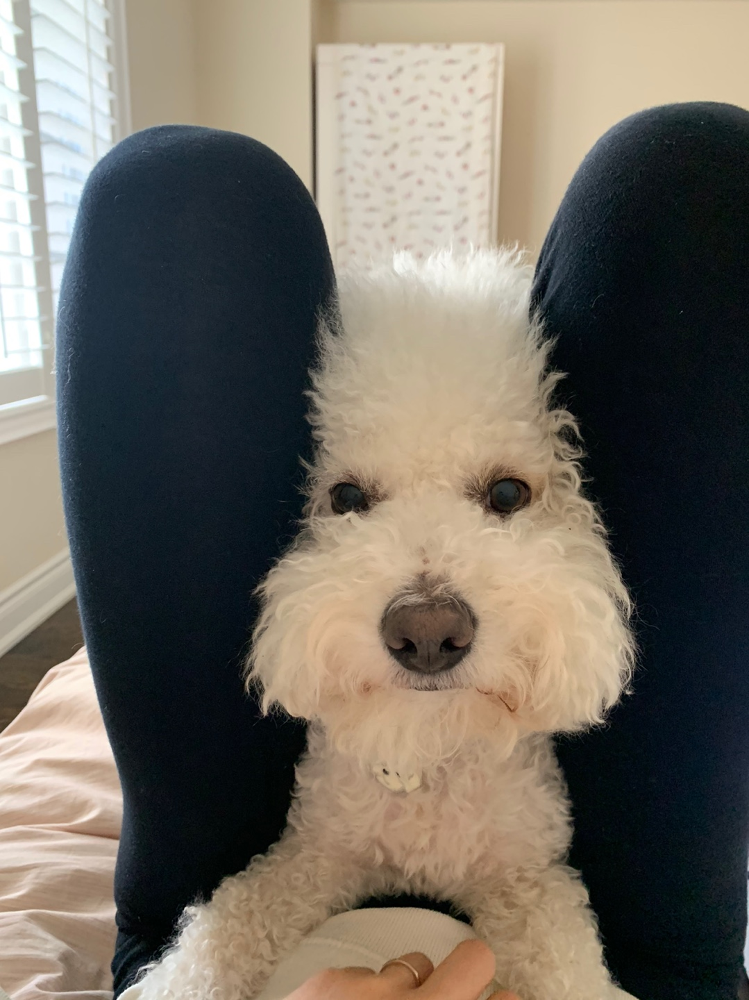

비숑 프리제(프랑스어: Bichon Frisé)는 개의 품종 중 하나다. 중세기 불어로 비숑(프랑스어: bichon)은 "작고 긴 털을 가진 개"를 의미한다. 주로 흰색의 곱슬거리는 털을 가진 프랑스와 벨기에 스위스 원산의 개로서,곱슬한 털이 자라면서 얼굴이 동그란 형태가 되는 것이 특징이다. 견종의 성격은 독립심이 강하며 세심하고 활발하다고 알려져있으나, 모든 강아지가 그러하듯 개별적으로 다양한 성격을 가진 것으로 보인다. 동그란 얼굴과 까만 코와 눈이 아름답게 조화를 이루는 외모로 털이 곱슬거리고 아름다운 만큼 관리가 까다롭다. 식성이 엄청나고 활발한 성격탓에 흥분을 잘한다. 어릴 때는 집안을 아무 이유없이 미친듯이 뛰어다니는데, 이것을 "비숑 타임(줄여서 비.타. 그분이 오셨다)라고 말한다.수명은 보통 15년~20년이다. 소형견으로 분류되나 일반적인 초소형견과는 거리가 있다. 표준 체중은 5.4kg~8.2kg이며, 보통 도그쇼에는 암컷은 5kg대, 수컷은 6kg대가 많이 나오는 편이다.
품종은 단일로 슈나우저나 푸들과 같이 크기별로 구분되지 않는다. 다만 아파트에서 키우기 쉽도록 말티즈 또는 토이푸들 등과의 교배를 통해 작게 만들어진 아이들을 미니비숑이라는 이름으로 개량이 이뤄지고 있으나 공인 견종으로 인정 받지는 못했다. 미니 비숑의 경우 견종 고정이 진행중인 단계로 한국, 대만, 중국의 대규모 사육장을 통해 빠르게 유행이 이뤄지고 있다. 비숑프리제 만이 가지고 있는 고유의 특징이 있는데, 비숑타임이다. 비숑 프리제에게 비숑타임이 왔을 때는 집안을 뛰어다니고 지속적으로 짖는 등 에너지를 많이 분출하는 행동을 한다. 하지만 비숑타임 이후에는 한없이 지친다.